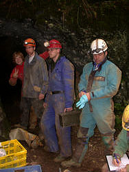
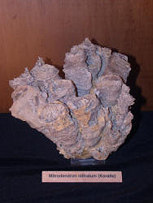
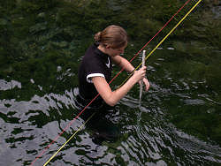

We will offer the following courses.
|  |
| Image: Techniques for Cave Exploration. |
Main topic of this course is to learn solid basic skills in cave exploration. There will be topics about ropes and knots, security, rescue, rappelling in shafts, rope ladders and single rope techniques (SRT).
A detailed cave map is essential for cave research. You will learn the basics techniques of cave surveying and how to draw a cave map with a computer (Therion). You will train the use of DistoX together with a PDA and you get to know other different surveying equipment like compass and clinometer.
Methods for gathering information and documentation of the cave fauna will be shown. You will take probes in a cave and learn how to write documentation and interpret the data. The result should be to get a feeling about the status of flora and fauna in the cave and become more sensible about the cave as a fragile biological system.
|  |
| Image: Geology - fossilized coral from the reef museum Gerstetten. |
Geology is investigating how caves form but also delivers valuable information for cavers. We will learn the basics of geology as reading of geological maps, profiles, tectonics, mineralogy and sediments which can show the climate during the last thousands of years. Depending on the weather situation, we will do practical field work in the Geo-Park Schwäbische Alb (Swabian Jura). We will hike to a meteor crater, visit remains of volcanism and collect fossils.
Electronic Radio Direction Finding, Communication in caves thru wire and wireless, GPS navigation. Theoretical presentations and practical work.
|  |
| Image: Practical Hydrology - measuring the production of the Blautopf. |
Equipment for measuring climate relevant parameters and transferring that data to the surface. Theoretical basics and practical usage of the equipment will be demonstrated.
Introduction into cave climate. What is climate in caves, why is it done, cave protection and exploration. Air temperature, air circulation measurements in theory and practice. How to plan an own project and how to do the data analysis.
Measurements of water drain and water pile up experiments will be done to calculate unknown cave volumes behind springs. We will also do salt tracer experiments and analysis. Theory and practical work will be shown.
Together with a specialist of the national museum for natural history you will look for pre-historic bones in a special district and compare these bones with others from the museum. You will learn to name these findings. We offer you field trips to the caves in the world culture heritage (since 2017) in our region.
{kind=link}
{kind=link}
{kind=link}